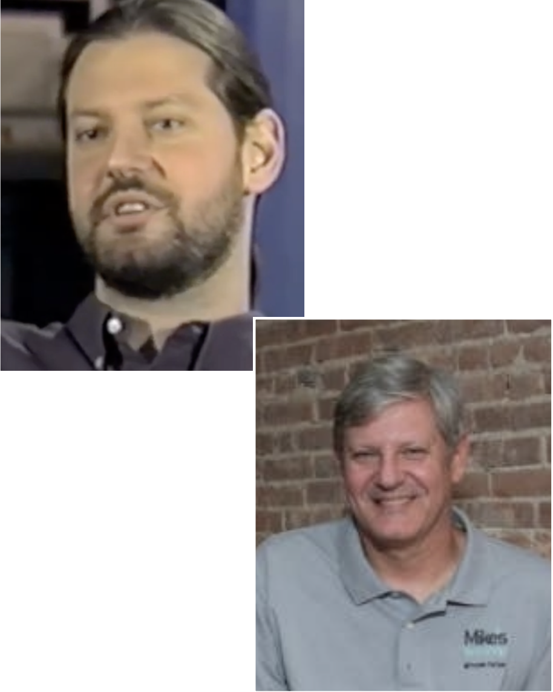

From One Guy to a Full Team. Same DNA.
MTS Pro Services started as a one-person Mac support operation in New York City. Over 30 years, it grew into a full- scale managed services firm with capabilities that most IT teams can’t match in-house. But the thing that’s never changed is the kind of people who work here.
Today, the team runs Talos Fleet Management deployments across 4,000+ Mac endpoints. We have more Jamf-certified techs than most Fortune 500 companies. And we still respond directly to clients.
That’s not a coincidence. It’s the same attitude Mike had rolling through the streets of Manhattan: Show up, figure it out, and fix it.
Meet The Team